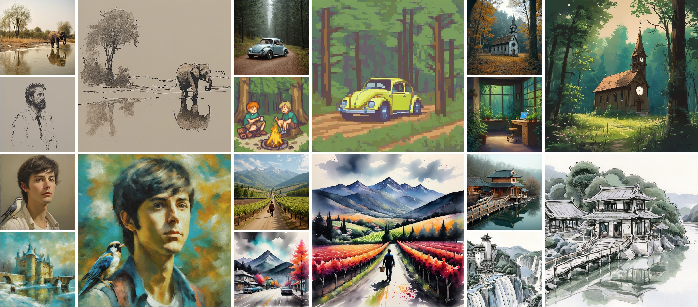
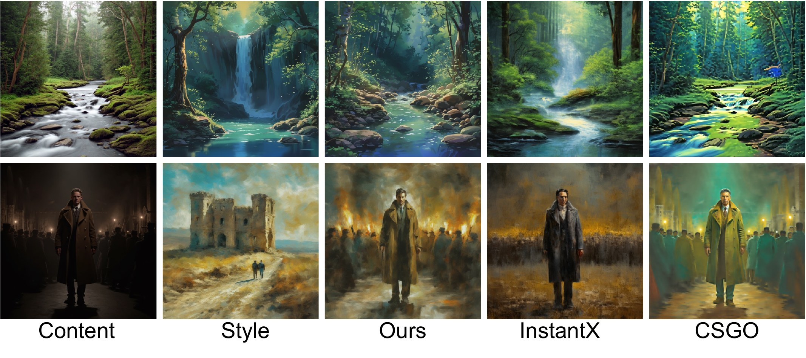
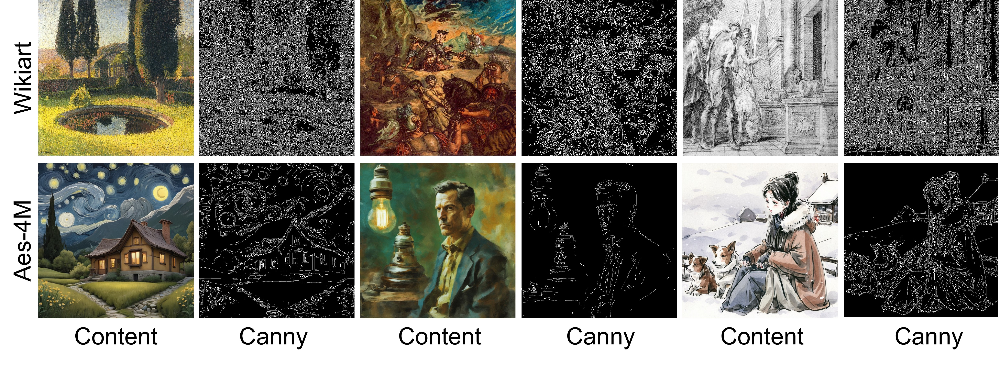
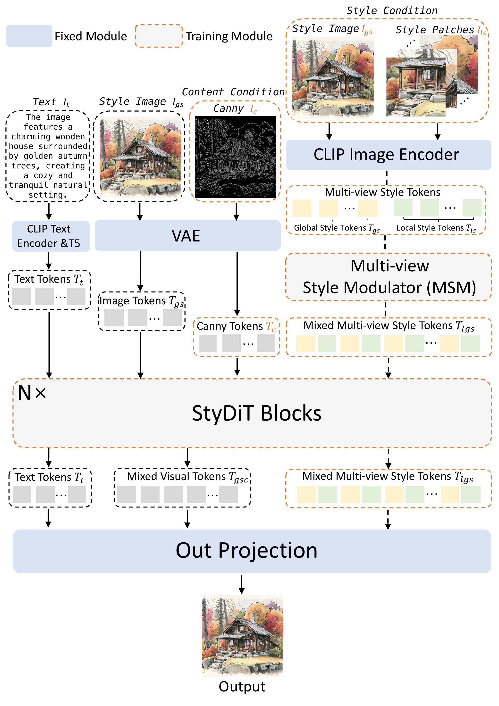
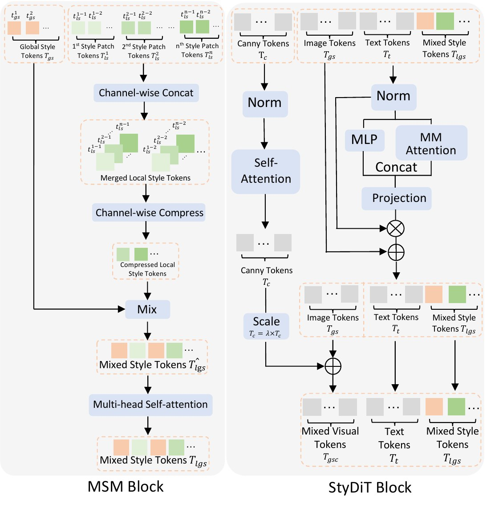
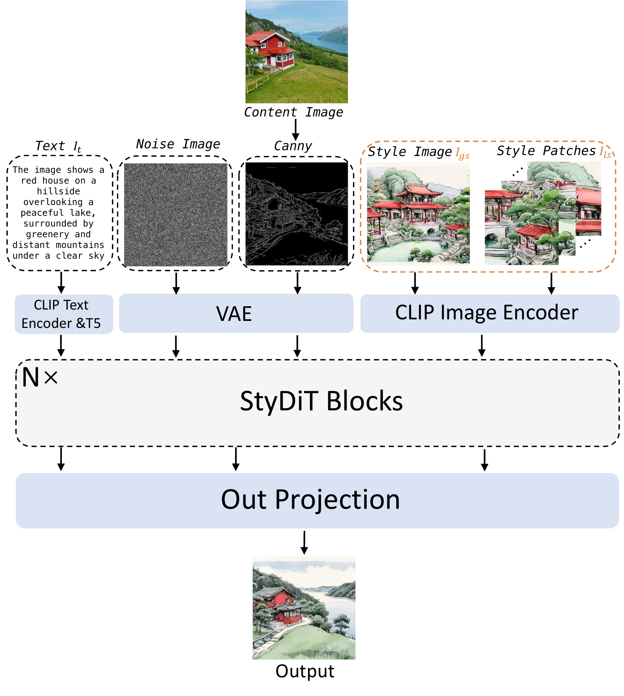
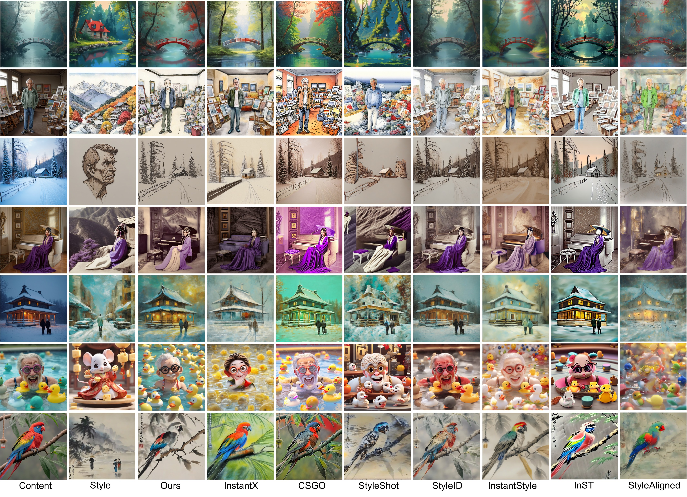
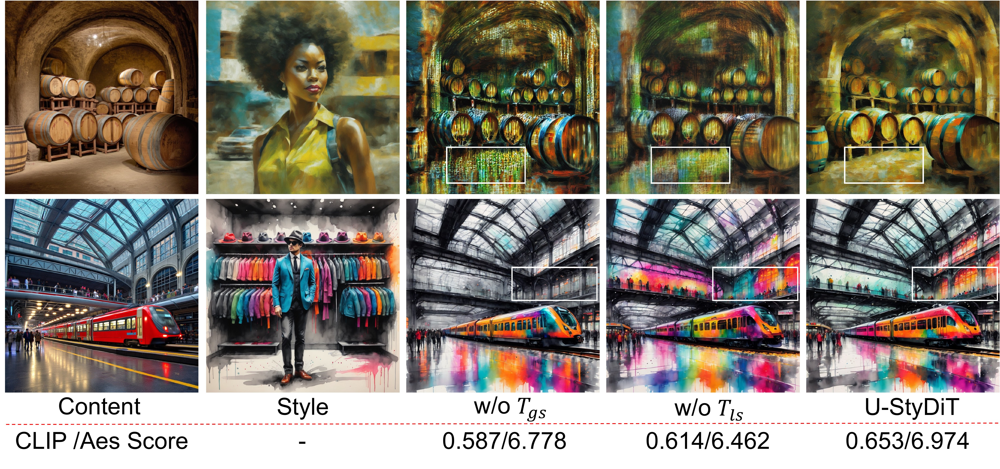
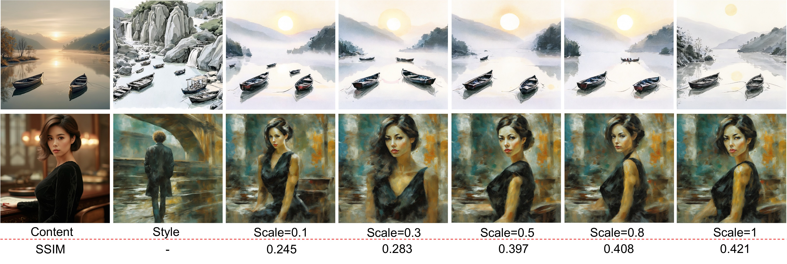

🎮 费曼一分钟
任务：给定内容图 + 风格图，生成超高画质艺术风格化结果——结构跟内容、笔触跟风格，且无伪影/不和谐纹理。
痛点：① 风格重建派（InstantX/IP-Adapter）只训风格 adapter，推理另挂 Canny 保结构 → 两路条件信息打架；② 解耦派（CSGO/StyleShot）用 UNet DiT 弱、WikiArt Canny 糊，画质上限低。
U-StyDiT：在 FLUX.1-dev（MM-DiT） 上全参微调，训练时从同一张风格图同时学内容（Canny）与风格（MSM）。
MSM：$1024^2$ 风格图 → 全局 $512^2$ + 10 个局部 patch；局部 token 通道拼接 + MLP 压缩，再与全局混合 → 多视角风格 token $T_{lgs}$。
StyDiT Block：$T_{gsc}=\lambda T_c + T_{gs}$，MMA 拼接 $[T_{gsc}; T_t; T_{lgs}]$；推理 $\lambda$ 调内容强度。
Aes4M：10 类 × 40 万 = 400 万张 $1024^2$ 高清艺术图（高美学 + 图文一致 + 清晰 Canny）。SSIM 0.421、美学分 6.974、欺骗率 78.1% SOTA。
Abstract
Ultra-high quality artistic style transfer repaints a content image using style from a style image. Existing methods (style reconstruction vs. content-style disentanglement) produce artifacts and disharmonious patterns.
U-StyDiT on DiT learns disentanglement: MSM (local+global style) + StyDiT Block (joint content/style). Dataset Aes4M: 10 categories × 400K style images. First transformer-diffusion method for ultra-high quality stylization.
超高画质风格迁移：用风格图重绘内容图。现有两类方法均有明显伪影。
提出 DiT 框架 U-StyDiT：多视角风格调制器 + StyDiT 块联合学内容与风格；发布 Aes4M 四百万艺术图数据集；首个基于 Transformer Diffusion 的超高画质风格迁移。
与 InstantX（外挂 Canny）相对：本文在同一 FLUX 训练流里联合优化 Canny 内容与 MSM 风格。与 CSGO 相对：换 DiT 骨干 + 自建高清数据。360 系（RelaCtrl/WISA/ArtBank 同组作者）。
📄 Figure 1：U-StyDiT 风格迁移结果

1. Introduction
Style reconstruction (IP-Adapter, InstantX, ArtBank…): train style adapter only; at inference add Canny for structure — style & Canny trained on different data → confusion & artifacts (Fig.2 col.4).
Disentanglement (CSGO, StyleShot…): learn content+style jointly but UNet DiT limits + poor datasets → not ultra-high quality.
WikiArt artistic textures make Canny extraction poor — hard to co-train content & style conditions (Fig.10).
风格重建派：只训风格，推理加 Canny → 两路条件数据集不一致，信息混淆。
解耦派：联合训练但 UNet 能力有限、数据质量不足。
WikiArt 艺术纹理导致 Canny 不清晰，阻碍内容与风格同步训练。
问题不只是「有没有 Canny」，而是Canny 与风格条件是否在同一分布、同一训练目标下学到。Aes4M 用合成高清图保证 Canny 可提取（阈值 200/100）。
📄 Figure 2 & 10：基线对比 & Aes4M vs WikiArt Canny


Aes4M Dataset
Scale: 10 categories × 400K = 4M images at $1024\times1024$.
Categories: oil, cartoon, Gufeng, pixel, paint, 3D, sketch, Peking opera, cute, wash painting.
Pipeline: Civitai LoRA × {SD3, SD3.5, SDXL, FLUX} → GPT-4o 1.7M prompts → filter: CLIP consistency >30, aesthetic >7, image–Canny CLIP >0.67 → ~400K/category.
四百万张、十类艺术风格、1024 分辨率。
油画/卡通/古风/像素/水彩/3D/素描/京剧/可爱/水墨等。
LoRA 控风格批量生成 → 三重过滤保图文一致、美学、Canny 可用性。
不是收集人类画作，而是可控合成——牺牲「纯真实」换 Canny 清晰 + 图文对齐。与 StyleShot/CSGO 三元组数据不同：训练只需单张风格图自重建（text + Canny + MSM style → 原图）。
3. Methods
Training objective: reconstruct style image $I_{gs}$ from text $I_t$, Canny content, and MSM style tokens — learned from same $I_s\in$Aes4M.
Given $1024^2$ $I_s$: resize → $I_{gs}$ ($512^2$); random crop 10 patches $\{I_{ls}^i\}$ ($512^2$ each).
Encoder → $T_{gs}$, $\{T_{ls}^i\}$. Channel-concat patches → $T_{ls}$; MLP weights $\alpha$ compress → $\hat{T}_{ls}$; Mix with $T_{gs}$ → MSA+FFN → $T_{lgs}$ (Eq. MSM).
训练：用文本、Canny、风格 token 重建同一张风格图（自监督式解耦）。
高分辨率图缩全局 + 随机裁 10 局部 patch，兼顾算力与细节。
局部 token 不丢弃低相似 patch（区别于 StyleMaster/LGAST），通道合并后 MLP 压缩再与全局混合。
若对 $\{T_{gs}, T_{ls}^1,\ldots,T_{ls}^{10}\}$ 做全交叉注意力，序列长度爆炸。通道维 concat + 逐 token MLP 加权求和 → 把 10 路局部压回与全局可比的 token 数，再 2 层 MSA。
📄 Figure 3：训练流水线

StyDiT Block (extends OminiControl MMA):
$$T_{gsc} = \lambda T_c + T_{gs}, \quad \lambda \in [0,1]$$
$$\mathrm{StyDiT}([T_{gs}; T_t; T_{lgs}; \lambda T_c]) = \mathrm{MMA}([T_{gsc}; T_t; T_{lgs}])$$
$T_c$: Canny VAE tokens; $T_{gs}$: resized style image tokens; $T_{lgs}$: MSM output.
在 OminiControl 条件 token 注入基础上，把 Canny 线性融入图像 token（非单独第四路拼接的简化表述）。
$\lambda$ 控制内容（结构）强度；训练时从风格图同时得到 $T_c$ 与 $T_{lgs}$，实现内容-风格联合学习。
InstantX：FLUX + 外挂 Canny ControlNet/IP。本文：单模型内 $T_{gsc}$ 融合，训练数据保证 Canny/风格同源 → 减少 Fig.2 第 4 列类伪影。
📄 Figure 4：MSM & StyDiT 结构

flowchart TB
subgraph train [Training on Aes4M style image I_s]
Is[1024 style I_s] --> Gs[Global 512 I_gs]
Is --> P10[10x random 512 patches]
Gs --> Tgs[T_gs VAE tokens]
P10 --> TLS[MSM compress local tokens]
Tgs --> MSM[MSM MSA+FFN]
TLS --> MSM
MSM --> Tlgs[T_lgs mixed style]
Gs --> Canny[Canny T_c]
Canny --> Tgsc["T_gsc = λ T_c + T_gs"]
Tgs --> Tgsc
Tgsc --> MMA[StyDiT MMA + T_t + T_lgs]
Tlgs --> MMA
MMA --> Recon[Reconstruct I_gs]
end
subgraph infer [Inference]
Cimg[Content image] --> Cc[Canny T_c]
Simg[Style image] --> MSM2[MSM]
MSM2 --> Tlgs2[T_lgs]
Cc --> Gen[U-StyDiT denoise]
Tlgs2 --> Gen
end
📄 Figure 13：推理流水线（附录）

4. Experiments
| Metric | U-StyDiT | InstantX | CSGO | StyleShot | StyleID |
|---|---|---|---|---|---|
| SSIM↑ | 0.421 | 0.231 | 0.256 | 0.153 | 0.376 |
| CLIP Score↑ | 0.623 | 0.551 | 0.560 | 0.615 | 0.552 |
| Aesthetic↑ | 6.974 | 6.332 | 6.159 | 6.720 | 6.611 |
| Deception Rate↑ | 0.781 | 0.645 | 0.597 | 0.586 | 0.531 |
| Time (s)↓ | 23.125 | 27.212 | 18.916 | 4.934 | 14.641 |
50 content × 20 style → 1000 pairs. Preference study: 100 pairs, 40 users, 2000 votes — aggregate favor 59.3% vs baselines.
结构相似度、风格 CLIP、美学分、人类欺骗率全面第一；推理 23s（512²，A40），比 InstantX 快但慢于 StyleShot。
训练：32×A100，batch 2×accum 4，200 万 iter，全参微调 FLUX.1-dev。
SSIM 大幅领先 → 内容结构保留是主要卖点。美学分 6.974 > InstantStyle 6.882。Preference 表里 InST 单项 61.4% 曾胜本文，但综合 59.3* 为论文宣称均值。
📄 Figure 5：与 SOTA 定性对比

MSM ablation (Fig.11): w/o $T_{ls}$ → local color confusion, lower CLIP & aesthetic; w/o $T_{gs}$ → artifacts, weak global stylization.
StyDiT $\lambda$ ablation (Fig.12): $\lambda$ from 0.1→1 — higher $\lambda$ → higher structural similarity to content.
去掉局部 token：同色物体颜色不一致；去掉全局 token：伪影、细节风格化不足。
$\lambda$ 越大越贴内容结构，越小越自由风格化。
推理时 $\lambda$ 是唯一显式内容强度旋钮（类似 ControlNet weight）。训练固定 Canny 阈值；未讨论 per-style 自适应 $\lambda$。
📄 Figure 11–12：MSM & StyDiT 消融


5. Conclusion
First transformer-diffusion framework for ultra-high quality artistic style transfer: MSM + StyDiT + Aes4M. Limitation: only 10 style categories — not open-world arbitrary style transfer at scale.
MSM 多视角风格 + StyDiT 联合解耦 + Aes4M 数据；局限：仅 10 类风格，算力/人力限制无法扩到开放世界任意风格。
无官方开源权重；全参微调 FLUX 成本极高；Aes4M 合成数据域与真实油画摄影仍有 gap；推理慢于轻量 UNet 方法。
符号速查表
| 符号 | 含义 |
|---|---|
| $I_s, I_{gs}, I_{ls}^i$ | 原风格图 $1024^2$ / 全局 $512^2$ / 第 $i$ 个局部 patch |
| $T_{gs}, T_{ls}, T_{lgs}$ | 全局 / 局部 / 混合风格 token |
| $T_c, T_{gsc}$ | Canny 内容 token / 与风格图 token 融合后的视觉 token |
| MSM | Multi-view Style Modulator |
| $\lambda$ | Canny 内容条件强度，$[0,1]$ |
| Aes4M | 10 类 × 40 万，共 400 万 $1024^2$ 艺术图 |
| StyDiT | 扩展 MMA 的联合内容-风格 DiT 块 |
论证总览
↓
假说：FLUX DiT 上从同一张图联合学 Canny(内容) + MSM(风格)
↓
MSM：1024→全局512 + 10局部patch；通道合并+MLP压缩；不丢低相似patch
↓
StyDiT：T_gsc = λT_c + T_gs；MMA([T_gsc; T_t; T_lgs])
↓
Aes4M：合成400万高清图，Canny/美学/图文三重过滤
↓
全参微调 2M iter → SSIM/美学/欺骗率 SOTA；λ 推理可控
🧩 结构化十问（AI 解构）
Q1 · 这篇论文要解决什么问题？
Q2 · 现有两类方法各差在哪？
Q3 · U-StyDiT 核心创新是什么？
Q4 · MSM 为什么不直接丢掉低相似 patch？
Q5 · StyDiT 与 OminiControl 有何关系？
Q6 · Aes4M 怎么构建？可信吗？
Q7 · 训练与推理各输入什么？
Q8 · 实验能证明有效吗？
Q9 · 主要代价与局限？
Q10 · 与 RelaCtrl / ArtBank 如何衔接？
🔬 深挖
训练=解耦、推理=组合
训练从未见过「内容图+风格图」配对；而是让网络从同一张风格图分离出 Canny 与 MSM 特征并重建。推理时把 content 的 Canny 与 style 的 MSM 特征重新组合——类似 CSGO 三元组思路，但监督来自自重建而非显式三元组数据集。
1024 信息如何进 512 训练？
全图 resize 丢细节 → 用 10 个 $512^2$ crop 补局部高频；这是 MSM 存在的直接动机，也是相对「只 resize」的信息守恒权衡。
批判性思维 · 盲区
- SSIM 与感知质量：结构指标高是否牺牲风格夸张度？CLIP 风格分仅略胜 StyleShot。
- 10 patch 超参：$n{=}10$ 固定，无敏感性曲线（算力/质量 Pareto）。
- 封闭类别：LoRA 十类能否泛化到用户随手拍的风格图？
- 全参 vs LoRA：2M iter 全参 FLUX 不可复现门槛；未报告 LoRA-only 上限。
- Preference 细节：对 InST/InstantStyle 单项偏好低于对方，需看是否因结构过强牺牲风格主观喜好。